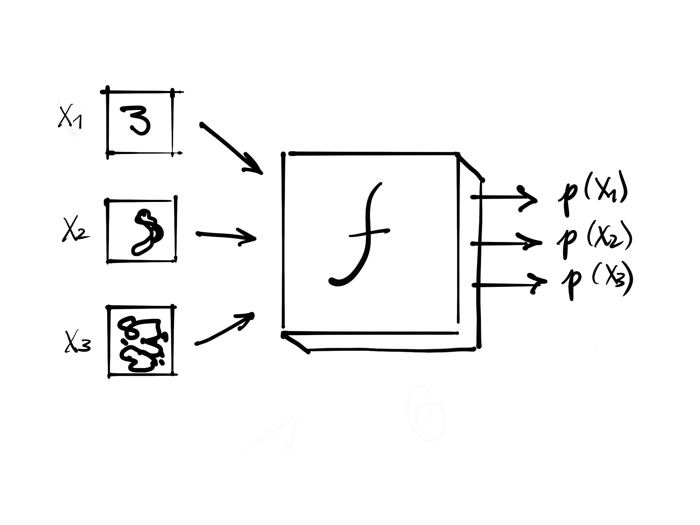
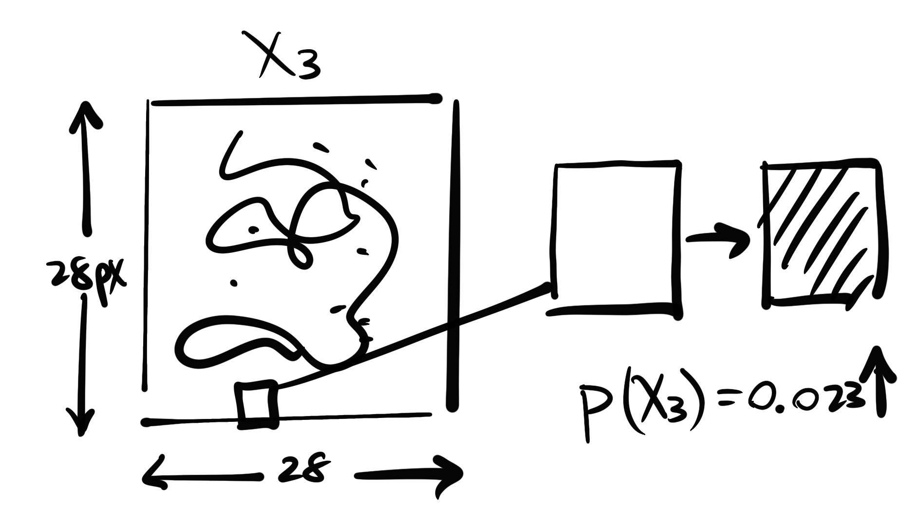
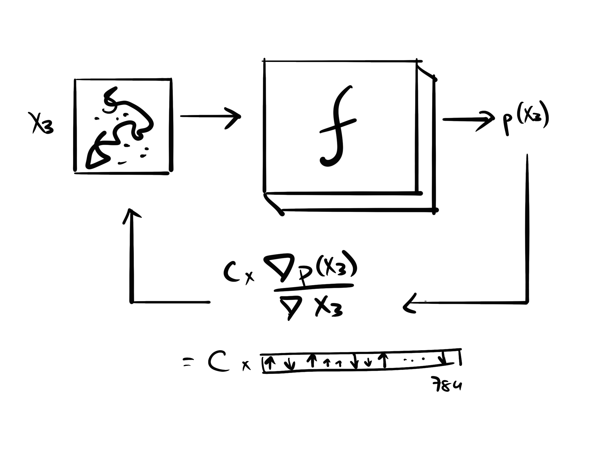
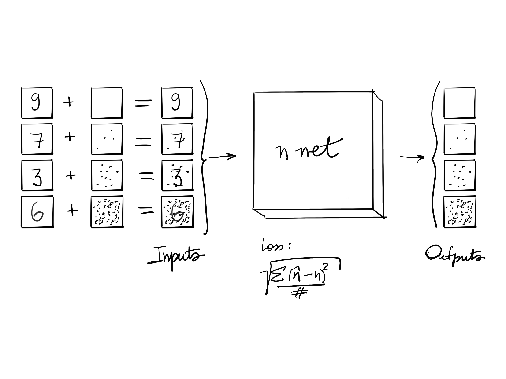
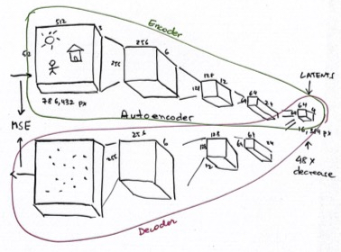
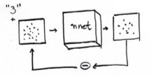
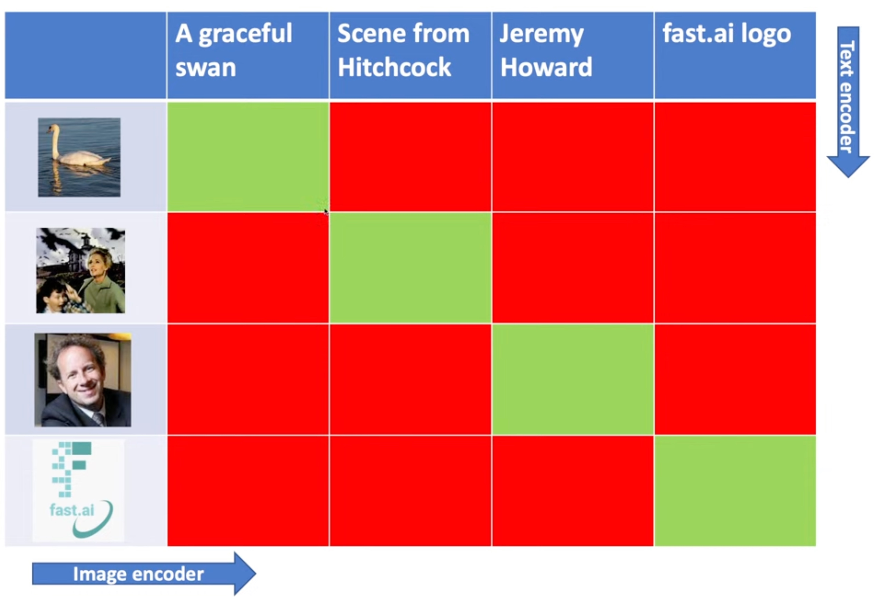

Practical Deep Learning For Coders 2022, Lesson 9
Course Logistics
Remember not to share links to course recordings or materials.
- You can share your notes/learnings, but please don’t share links to course recordings or materials.
- Resources Needed: – Colab pricing has gone crazy, now is not a bad time to buy a GPU. – Lambda is offering $150 in GPU time. The challenge is that you cannot pause a lambda instance. – For part 2, you may need 16Gb to 24Gb of GPU VRAM for training and 8Gb for inference.
- Check you are tracking Lesson 9 official topic (end of the page). The “chat” is the official source of information for the lesson.
- There is a Google calendar for lessons
- Lesson 9 is divided into 3 parts (links in Lesson 9 official topic):
- This stream
- Lesson 9A from Jonathan Whitaker (@johnowhitaker): A deeper dive on the subject
- Lesson 9B from Tanishq (@ilovescience) and Wasim (@seem): About the math. To be released.
- diffusion-nbs repo: things to start to play with stable diffusion
- It is recommended to take a look at the background links
- another suggestion was Radek’s Meta Learning book
- There will always be a little bit of logistics talk before the recording of each lesson. The official recording starts when slide with title appears.
- Study groups make learning more fun
- The SF Study Group is the one running longer
Introduction [00:00]
- First lesson of part 2: “Deep learning Foundations to Stable Diffusion.”
- (Im)practical: we will learn a lot of details that are not necessary for use but will be essential for research.
- We will do a quick run on how to use Stable Diffusion
- If you haven’t done DL before, it will be hard. Strongly suggest doing Part 1 before this part.
- Stable diffusion is moving quickly.
- Even as of recording, the Lesson Notebook is a little bit outdated.
- But don’t worry, the foundations don’t change so much.
What has changed from previous courses
- No longer all centred in Jeremy
- influenced by Fast.ai alumni
- [Jonathan Whitaker (@johnowhitaker)]: first to create educational material
- Wasim Lorgat (@seem): extraordinary fastai contributor
- Pedro Cuenca (@pcuenq): came to SF last course and it is now at HuggingFace
- Tanishq (@ilovescience): now at stability.ai, expertise on medical applications
Compute
Part 2 requires more computing. Check options in course.fast.ai:
- Colab is still good but is getting pricier
- Paperspace Gradient
- Jarvis Labs: made by fastai alumni and loved by many students
- Lambda Labs is the most recent provider. They are the cheapest (at the moment)
- GPU prices are going down
Play with Stable Diffusion! [16:30]
- fastai/diffusion-nbs
- references to tools and cool stuff
- Play a lot! It is important to play and learn the capabilities and limitations
- the community has moved towards keeping code available as
colab`notebooks- example: Deforum
- The best way to learn about prompts is (Lexica.art)[lexica.art]
- By the end of this course, we will understand how prompts work and go beyond with new data types
How to get started with Stable Diffusion [21:00]
Using 🤗 Huggingface Diffusers
Diffusers is HuggingFace library for Stable Diffusion
- at the moment, the recommended library
- HF 🤗 has done a great good job of being pioneers
- HF pipeline is similar to fastai learn
torch.manual_seed(1024) num_rows,num_cols = 5,5 pipe.safety_checker = lambda images, clip_input: (images, False) images = concat(pipe(prompt="a photograph of an astronaut riding a horse", num_inference_steps=s, guidance_scale=7).images for s in list(range(2,100,4)))
Figure 1: Image output of the inference with a different number of steps (from 2 to 98 steps, increasing 4 steps per image). inference is quite different to what we have been used to in fastai
- usage of prompts, guidance scale, etc
- these models require many steps
- research is reducing the number of steps, but good results still require many
Many steps can be detrimental to the final quality, but this hunch needs more experimentation.
- guidance scale says to what degree we should be focusing on the caption (prompt)
- JH has the feeling that there is something to be done in this function

- [33:20] negative_prompt: will take the prompt and create a second image that responds to the negative_prompt and subtract from the first one
🤗 Diffuser Img2Img Pipeline [34:30]
- you can create something with the composition you are looking for
- you can use the output of a previous result as input

Fine tunning 🤗 Diffuser model
- textual inversion: you fine tune a single embedding.
- give the concept a name (token)
- give example pictures of this token and add them to the model
- Dreambooth [41:15]
- takes a not-so-used token and finetunes just this token
How Stable Diffusion works [44:55]
- We will use a different explanation to what is commonly explained
- it is equally mathematically valid
- Start by imagining we want Stable Diffusion to generate something simpler, like handwritten digits
- Assume there is a black box that takes an image of a handwritten digit and returns the probability that this image is a handwritten digit

f- We can use this black box to generate a new image (of a handwritten digit)
- we start with one of the input pixels. Let’s say it is a 28x28 image, 784 pixels.
- we take one pixel of the image, change it (make it darker or lighter) and see what happens to the probability of the image being a handwritten digit

- we could do this by each pixel…. but
- Take \(\frac{\nabla p(X_3)}{\nabla X_3} \leftarrow 784 \text{ values}\) : the gradient of the probability of the image being a handwritten digit with respect to the pixels of \(X_3\)
- the values show us how we can change \(X_3\) to increase the probability
- we will do something similar to what we did with the weights of a model, but with the input pixels

- we will then apply some constant value (like a learning rate) to the gradient and add it to the image
- we repeat this process many times
- Assume that
fhas af.backward()which gives us the gradient directly:
- we don’t particularly need the calculation of the probabilities
- Now, how to create
f? Use a neural network for that:
- we can use a dataset of handwritten digits and input random noise on them (to any amount wanted)
- we want the neural net to predict the noise that was added to the handwritten image
- we are going to think about neural nets as just a black box of inputs, outputs and a loss function
- the inputs and outputs applied to the loss function changes the weights of the model
- we are building a neural network that predicts the noise
- We already know how to do it (Part 1 of the course)
- we are done…. because
- With such neural net
f, we can input a random noise and get the gradient that tells us how to change it to make it more likely to be a handwritten digit
- for this nnet, we use a Unet
- the input is a somewhat noisy image
- the output is the noise added to the image

| Input | Output | |
|---|---|---|
| Unet | somewhat noisy images | the noise |
- The problem we have is that (besides handwritten digits generation) we want to generate 512 x 512 x 3 images which are too big (786,432 pixels)
- training this model by changing images pixel-by-pixel too slow
- how to do it more efficiently? We know there is a way to compress images (like JPEG)
- a way to do it is to use a neural network to compress the image
- we can then train our Unet with the compressed version of our images

| Input | Output | |
|---|---|---|
| Unet | somewhat noisy latents | the noise |
| VAE’s decoder | small latents tensor | large image |
We use our Unet with somewhat noisy latents and output the noise that was added to the latent. Then we use the decoder to get the resulting image
But that was not what we were doing in the beginning; we used
promptsto tell what we wanted to generate
- what if we add to the noisy input of the unet the number we want to generate? Add a one-hot-encoding of the possible digits.
- now our unet will output what are the pixels need to change to create the specific handwritten digit we want to build
- the digit we want to produce works like guidance to the model

why not add inputs that are not only the description of the image we want but also some classification of style (as an embedding) or action to images (composition, etc)?
- Back to the original problem, how can we generate an image from a prompt like “a cute teddy”?
- we cannot one-hot-encode all possible descriptions
- we need an encoding that represent the image we want (the prompt)
- for that, we get millions of images from the internet with their alt text descriptions
- we can then create a model that is a
textencoder - we pair the output of the text encoder with the output of the image encoder (using the dot product)
- we build a model that correlates those two encodings
- we have built a multimodal model for generating encodings
- that is what we will use instead of one-hot-encodings
- the model that is used here is named CLIP
- where similar text descriptions give us similar embeddings

| Input | Output | |
|---|---|---|
| Unet | somewhat noisy latents | the noise |
| VAE’s decoder | small latents tensor | large image |
| CLIP | text description | embedding |
- The last we need is how to inference
- we will avoid use the term “time steps”
Next lesson
- looking inside the pipeline
- then a huge rewind through the foundations